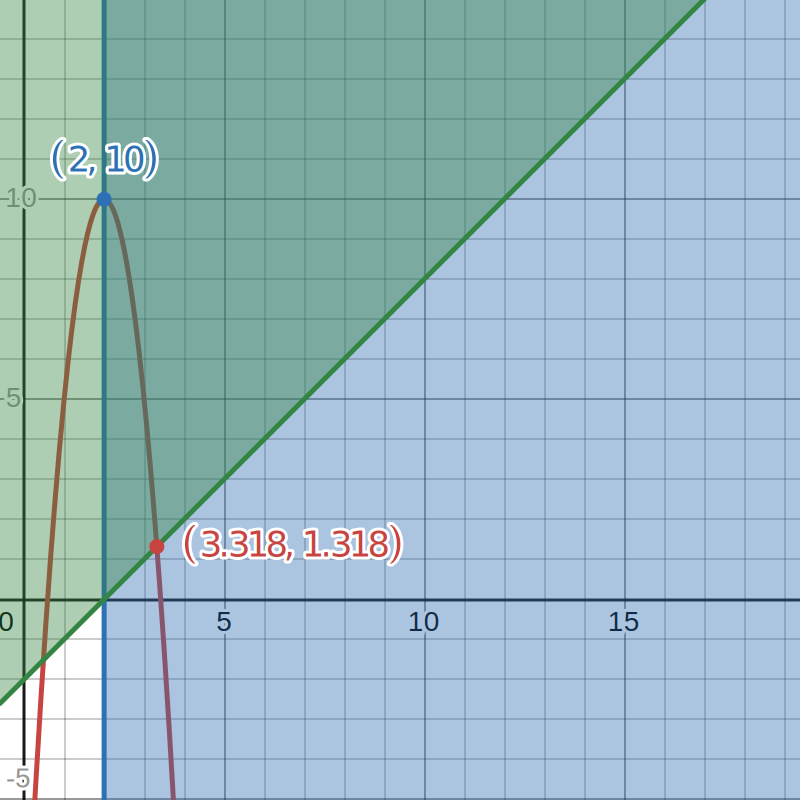

Problem 1.11: An amplifier designed using a single metal-oxide-semiconductor (MOS) transistor has the transfer characteristic:
$$ v_O = 10 - 5(v_I - 2)^2 $$
where $v_I$ and $v_0$ are in volts. This transfer characteristic applies for $2 \leq v_I \leq v_O + 2$ and $v_O > 0$. At the limits of this region the amplifier saturates.
a.) Sketch and clearly label the transfer characteristic. What are the saturation levels $L_+$ and $L_-$ and the corresponding values of $v_1$.
b.) Bias the amplifier to obtain a dc output voltage of 5V. What value of input dc voltage $V_I$ is required.
c.) Calculate the value of the small-signal voltage gain at the bias point.
d.) If a sinusoidal input signal is superimposed on the dc bias voltage $V_I$, that is:
$$ v_I = V_I + V_i \cos(\omega t) $$
Find the resulting $v_O$. Using the trig identity $\cos^2(\Theta) = \frac{1}{2} + \frac{1}{2} \cos (2 \Theta)$, express $v_0$ as the sum of a dc component, a signal component with frequency $\omega$, and a sinusoidal component with frequency $2\omega$.The later component is undesireable and is a result of the nonlinear transfer characteristic of the amplifier. If it is required to limit the ratio of the second harmonic component to the fundamental component to $1%$, this ratio is know as the second-harmonic distortion, what is the corresponding upper limit on $V_i$?
Problem 1.11:
a.) Figure 1 below shows a plot of the transfer function $v_O = 10-5(v_I-2)^2$. The Green area shows the region for $v_I \geq 2$ and the blue region shows the region for $v_I \leq v_O + 2$. The segment of the curve where green and blue do not overlap is the valid operating region of the amplifier.

Figure 1: Transfer function with Saturation Regions Highlighted
Find $L_+$ by solving for $v_O$ when $v_I = 2$:
$$ L_+ = v_O = 10-5(2-2)^2 $$
$$ L_+ = 10 $$
Find $L_-$ by solving for $v_O$ when $v_I = v_O + 2$:
$$ L_- = v_O = 10-5(v_O+2-2)^2 $$
$$ L_- = v_O = 10-5v_O^2 $$
$$ 0 = 5v_O^2 + v_O - 10 $$
The quadratic equation gives two solutions for L_-,
$$ L_- = v_O = (-1.517, 1.318) $$
but only one of these is in the provided non-saturation range:
$$ v_O = 1.318 $$
Table 1 below summarizes the inpur and output voltages at the edge of saturation:
| Sat | v_I | v_O |
|---|---|---|
| L_+ | 2 | 10 |
| L_- | 3.318 | 1.318 |
Looking closely back at figure 1 we can visually confirm these results.
b.) Solve for $v_I$ when $v_O=5$:
$$ 5 = 10-5(v_I-2)^2 $$
$$ -5 = -5(v_I-2)^2 $$
$$ 1 = (v_I-2)^2 $$
$$ \pm \sqrt(1) = v_I-2 $$
$$ \pm 1 = v_I-2 $$
We get two solutions for $v_I$
$$ v_I = (1, 3) $$
But only one answer gives us a valid non-saturated input voltage:
$$ v_I = 3 $$
c.) To find the small signal voltage gain solve for the derivative of $v_O$ with respect to $v_I$:
$$ \frac{dv_O}{dv_I} = \frac{d}{dv_I} \left[ 10-5(v_I-2)^2 \right] $$
$$ \frac{dv_O}{dv_I} = \frac{d}{dv_I} \left[ 10-5(v_I^2-4v_I+4) \right] $$
$$ \frac{dv_O}{dv_I} = \frac{d}{dv_I} \left[ 30-5v_I^2-20v_I \right] $$
$$ \frac{dv_O}{dv_I} = 10v_I-20 $$
now solve when $v_I=3$ to get the answer:
$$ 10(3)-20 = 10 $$
$$ 10 V/V $$